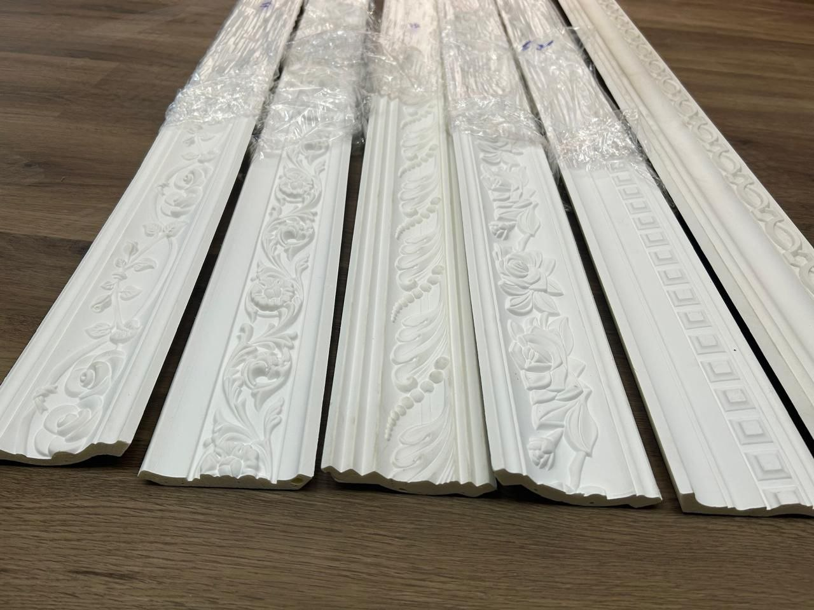

At home
Plan the everyday details: circulation, comfortable rooms, useful storage and finishes that belong together.
Discuss your home ↗Our services
From space planning and furnishing to renovation and fit-out, explore the support available for your home, workplace or hospitality project.
Tell us about your space
Plan the everyday details: circulation, comfortable rooms, useful storage and finishes that belong together.
Discuss your home ↗Consider staff and customer movement, furniture needs, practical surfaces and how your brand feels in the space.
Discuss your business ↗Think about arrival, seating, atmosphere, durable finishes and the way guests and staff use the interior.
Discuss your venue ↗Choose your starting point
These are areas to discuss, not fixed packages. Your proposal will define the agreed work, responsibilities and scope.

01 / OUR EXPERTISE
A new space, a different layout, or a clearer design direction.
Explore how rooms connect, where furniture belongs and how colours, materials and lighting work together to create a cohesive result.
Whether you are refreshing a home, aligning a workplace with your brand, or shaping a hospitality atmosphere, this stage helps establish the design framework before decisions become costly.
Bring photos or a plan, your inspiration, and what you want the space to do differently.

02 / OUR EXPERTISE
A room that functions but needs warmth, cohesion or a fresh look.
Bring furniture, lighting and decorative details together around a consistent direction so the space feels intentional rather than simply filled.
We help refine what is retained, what should be introduced, and how each item contributes to the comfort, proportion and character of the room.
Decide which existing pieces to keep, how the room will be used, and your preferred style.

03 / OUR EXPERTISE
An existing interior that needs physical changes and coordinated installation.
Discuss the work required to bring your design into place, including finishes, joinery, flooring, wall treatments and the practical sequence of installation.
For homes, businesses and hospitality spaces, fit-out work is where design intent becomes real. We help coordinate the process so it remains clear, efficient and aligned with your timeline.
Share the current condition, access arrangements, any occupied areas and your target timing.

04 / OUR EXPERTISE
Kitchens, wardrobes and fitted storage that need to suit your space.
Custom joinery is where function and aesthetics meet. It allows storage, layout and finishes to be tailored precisely to how the room is used.
From integrated cabinetry to built-in shelving and detailed millwork, this service ensures your interior feels considered rather than standard.
Think about what needs storing, preferred access, dimensions and the finishes you like.

05 / OUR EXPERTISE
A project with several installation, sourcing or finishing stages.
Bring the design decisions and practical work into a shared plan so each stage of the project remains clear, accountable and aligned with your priorities.
This support is especially useful when multiple suppliers, trades or decisions are involved and you want a smoother path from concept to completion.
Clarify who is involved, what has already been agreed and which responsibilities need support.
More ways we can help
These are also useful starting points when you want to refine a project further.
We look at how a room will function, how people move through it and how the layout supports comfort and efficiency.
Discuss this ↗We consider the mood, glow, contrast and clarity required to help a room feel balanced and purposeful.
Discuss this ↗We review finishes, textures and selections to make sure the final look feels cohesive, durable and clearly aligned with the design direction.
Discuss this ↗Plan with a clearer picture
A room refresh and a complete fit-out need different levels of work. Start with your priorities so we can discuss a scope that makes sense for your space.
Discuss your scope & budget ↗The area, current layout and preparation needed help define the amount of work.
Flooring, cabinetry, lighting and furniture choices influence the overall budget.
Access, custom work and the sequence of trades affect the project plan and timing.
Have your location, a few photos, approximate measurements and your main priorities ready. Share a preferred budget and timeline if you have them.
We can then discuss suitable services, what needs a closer site assessment, and the next steps for a project proposal.
Your ideas are a good place to start
A new home, a working space, or a place to welcome guests. Share what you have in mind and let’s explore the next step.
Start your project